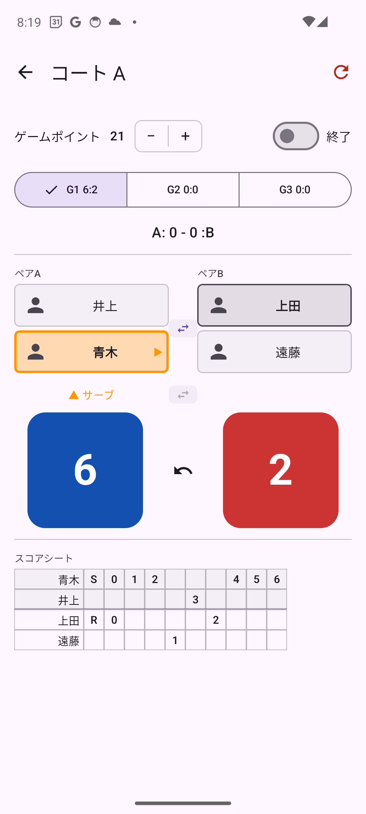

ゲームタブのゲーム行をタップすると、スコア入力画面が開きます（横向き画面で表示されます）。

画面右側の 得点 L または 得点 R ボタンをタップすると、左・右チームに1点が加算されます。
得点に合わせてサーブ権が自動で切り替わり、サーブ権を持つチームに「▲ サーブ」マークが表示されます。
中央の ↩（元に戻す）ボタンで直前の得点を1点ずつ取り消せます。
画面左側のタブ（G1 / G2 / G3）で第1ゲーム・第2ゲーム・第3ゲームを切り替えます。
画面左下の 終了 トグルをオンにするとそのゲームが終了扱いになり、勝利ゲーム数に反映されます。
エンド ボタンをタップすると、左右のペアが入れ替わります（エンドチェンジ）。スコア履歴のドットも自動で反転します。
ゲーム開始前（まだ得点が入っていない状態）に限り、サーブ ボタンでサービス権チームを入れ替えられます。また、プレイヤー名をタップすると、同ペア内でサーバーとレシーバーを入れ替えられます。
画面右上の ↻ アイコンから、そのゲームのスコアをリセットできます。